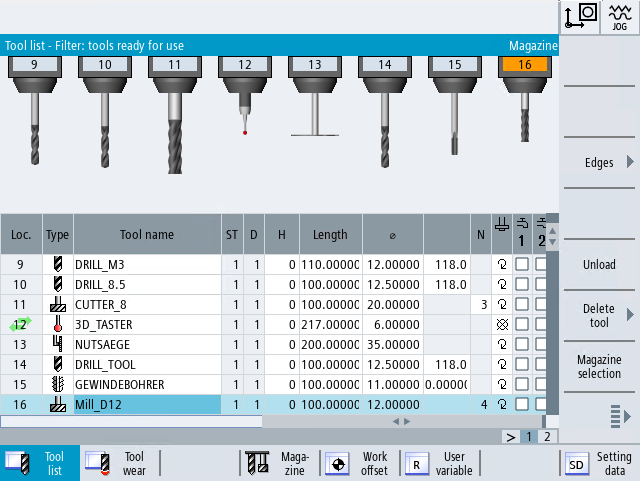
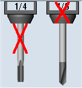

In addition to the list of tools, you can also display the tools and magazine locations in a dynamic graphic display.
The tools are displayed in the list in the order with their correct proportions.
The graphic display must be set up by the machine manufacturer.
| | Machine manufacturer Please observe the information provided by the machine manufacturer. |
More information
More information on the configuration can be found in the Tool Management Function Manual.
Graphic display of tools and magazine locations
The following applies to the graphic display:
If a tool is too long for the display, the maximum possible length is shown.
Oversized tools are trimmed on the left and right sides.
Tools that are not located in the magazine are displayed without toolholder.
Disabled tools or magazine locations are marked by means of a red cross:
|  |
| Note |
Measuring tools type 713 / 714So that the tools "L button" and "star probe" are displayed in the graphic tool display, enter in the "More data" window the additional Parameter "Boom length" or "External diameter". |